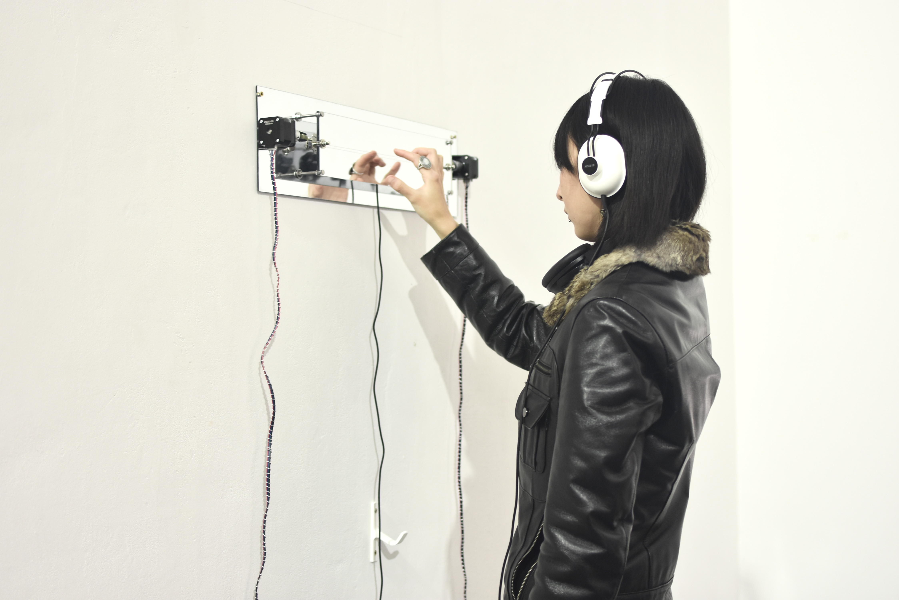
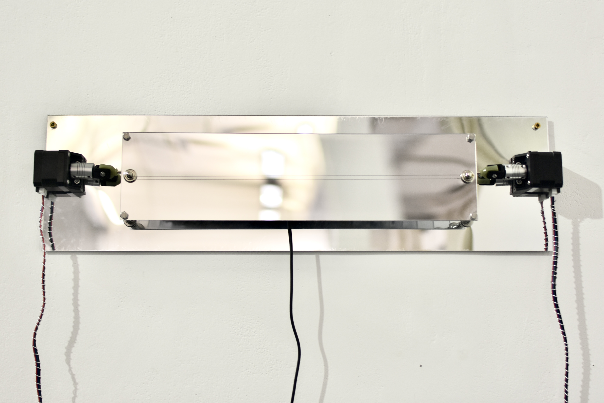
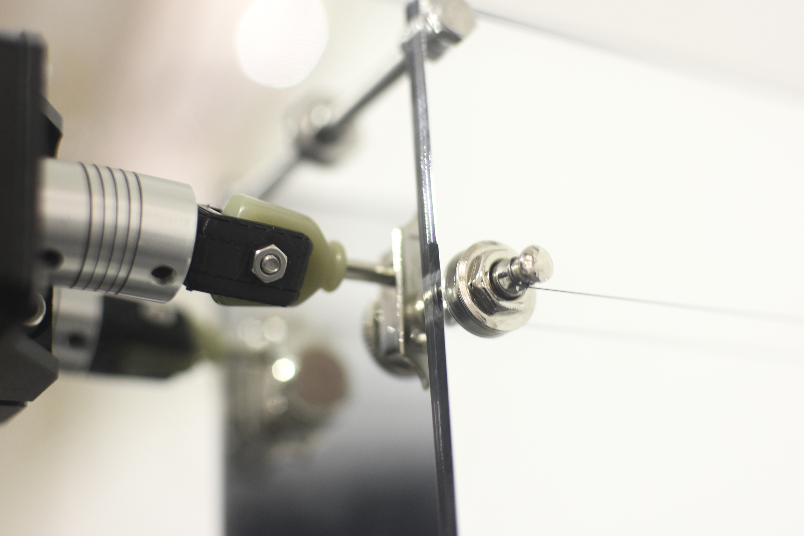

(de)tuning
2025
Stepper motors, Acrylic, Guitar pegs, Guitar string, Metal
Tuning is the process of adjusting a string toward the "right" pitch. In this project, I want to explore the in-between state of a machine that keeps reaching for a "goal" it can never fully meet. The action repeats again and again, yet each attempt differs. In the system, two motors pull and release the guitar string, while subtle shifts in pitch are sensed and amplified, creating a fragile soundscape of uncertainty and imperfection.
(de)tuning is an experiment that looks at what tuning means in musical performance and in the everyday care of instruments. I am interested in the moment when something gets very close to its goal but never fully reaches it. Tuning shows this clearly. A performer keeps adjusting the string, trying to find the right pitch, while also knowing there is always a little bit of error in the instrument. In a way, tuning is never finished, and the act of playing is already part of the process of detuning.
This project sits within my wider research into the in-between states of machines, especially musical instruments. In this work, two motors keep tightening and loosening a guitar string by turning the tuning pegs. Together, the machine and the audience create an uncertain and shifting sound. It is this gentle, ongoing change, shaped by repetition and small imperfections, that I want to explore.
tuning/Images/IMG_9534.jpg)


